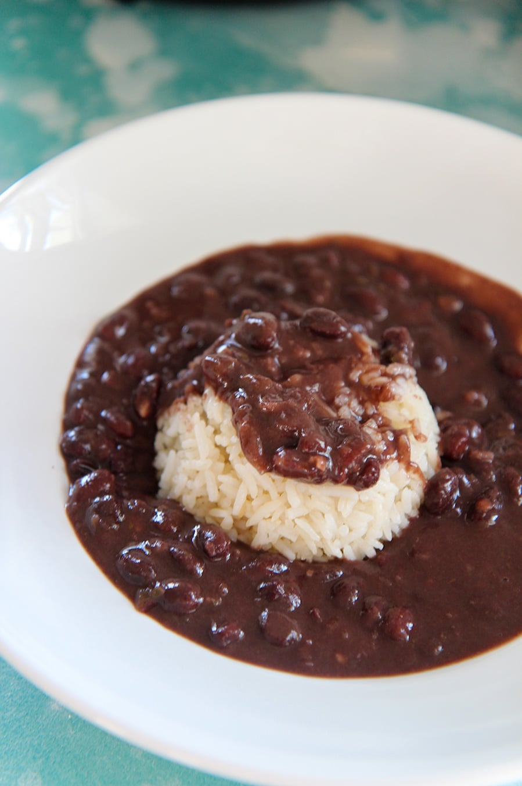

Cuban Black Beans

Description
Cuban black beans and rice will be my death bed meal for certain. There is no other dish that comes close to the feeling of home than this for me. With this recipe you get to enjoy the quality of dried beans over canned and it still takes no time at all thanks to the use of an instant pot.
Ingredients
- 1 Yellow onion medium dice
- 1 green pepper medium dice
- 5 Cloves of garlic minced
- 1 Tb spoon sofrito
- 1 pound of dried black beans
- 3 bay leaves
- 1.5 Tb of cumin
- .5 Tb Corriander
- 1 Tb Oregano
- .25 cup cooking sherry
- .25 cup tomato sauce
- Pinch of Sugar
- Salt and pepper to taste
- 1.5 Qt water or chicken stock
Steps
- Add the black beans to the instant pot along with the water and green pepper
- Press the "pressure cook" function on your instant pot and select 25 minutes
- When the 25 minutes are up, do a natural release. When the pin in the lid drops down, safely open the lid. Press the "saute" function and let the beans cook uncovered while you prepare the veggies.
- Add some oil to a medium skillet on the stovetop and let it heat over medium-high heat.
- Add the onions and cook for 3-4 minutes or until translucent. Then stir in the garlic and cook for an additional 20 seconds. Add the tomato sauce and cook for another minute. Deglaze pan with cooking sherry. Add sauted veg to instant pot with beans along with remaining ingredients.
- Continue cooking for 20 minutes or until the beans are nice and thick while occasionally stirring.
- Garnish with cilantro if desired.